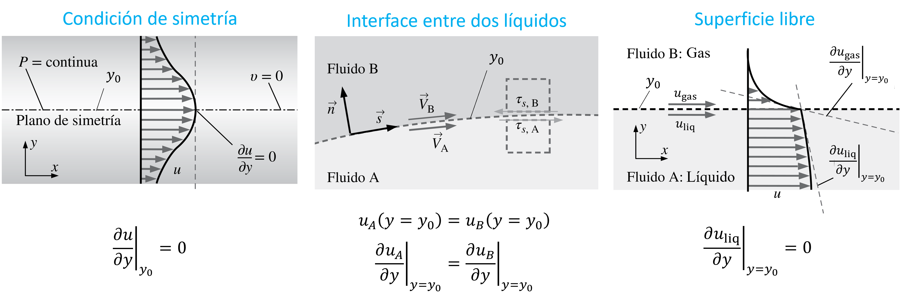

8.1. Introducción
En la unidad anterior dedujimos las ecuaciones de conservación de masa y momento lineal en su forma diferencial.
En esta unidad derivaremos la ecuación de Navier-Stokes, la cual constituye la base de la mecánica de fluidos. Técnicamente, cualquier problema de la mecánica de fluidos asociado a las condiciones incompresible-newtoniano puede ser caracterizado a partir de la solución de estas ecuaciones.
Sin embargo, la complejidad asociada al número de incógnitas, variables independientes, y sobre todo a su condición no-lineal, hacen imposible su solución, salvo en casos particulares que revisaremos al final de la unidad.
8.2. Ecuación de Navier-Stokes
En el caso particular de un flujo incompresible, la ecuación de coservación de masa es:
(8.1)\[\begin{equation}
\nabla\cdot\vec{V} = 0
\end{equation}\]
Si el fluido es newtoniano, el tensor esfuerzos de corte es directamente proporcional a la razón de deformación:
(8.2)\[\begin{equation}
\bar{\tau} = 2\mu \bar{\varepsilon}= \mu\left[\left(\nabla\vec{V}\right) + \left(\nabla\vec{V}\right)^T \right]
\end{equation}\]
Es posible demostrar que:
\[\begin{align*}
\nabla\cdot\bar{\tau} = \mu\left[\nabla^2\vec{V} + \vec{V}\left(\nabla\cdot\vec{V}\right)\right]
\end{align*}\]
El último término a la derecha es 0, por condición de flujo incompresible. Luego, combinando esta expresión con la ecuación (7.17), la ecuación de convervación de momento lineal es:
(8.3)\[\begin{equation}
\rho\frac{d\vec{V}}{dt} = - \nabla p + \mu\nabla^2\vec{V} + \rho\vec{g}
\end{equation}\]
Esta es la ecuacion de Navier-Stokes. Corresponde a una ecuación diferencial parcial de segundo orden, no lineal y no estacionaria.
Notar que la ecuación de Navier Stokes es una ecuación vectorial y por lo tanto, está conformada por 3 ecuaciones. Sin embargo, el problema de fluidos tiene 4 incognitas \(u\), \(v\), \(w\) y la presión \(p\).
Para poder resolver este problema, necesitamos una cuarta ecuación la cual corresponde a la continuidad para flujo incompresible, \(\nabla\cdot \vec{V} = 0\).
8.2.1. Navier-Stokes en coordenadas cartesianas
En coordenadas cartesianas, tenemos que el vector \(\vec{V}\) se descompone en las componentes \(u\), \(v\) y \(w\). Las ecuaciónes de continuidad y Navier-Stokes toman la siguiente forma:
Encuación de continuidad flujo incompresible
\[\begin{equation*}
\frac{\partial u}{\partial x} + \frac{\partial v}{\partial y} + \frac{\partial w}{\partial z} = 0
\end{equation*}\]
Navier-Stokes
\[\begin{align*}
\rho \left(\frac{\partial u}{\partial t} + u\frac{\partial u}{\partial x} + v\frac{\partial u}{\partial y} + w\frac{\partial u}{\partial z}\right) &= -\frac{\partial p}{\partial x} + \mu \left(\frac{\partial^2 u}{\partial x^2} + \frac{\partial^2 u}{\partial y^2} + \frac{\partial^2 u}{\partial z^2}\right) + g_x
\\
\rho \left(\frac{\partial v}{\partial t} + u\frac{\partial v}{\partial x} + v\frac{\partial v}{\partial y} + w\frac{\partial v}{\partial z}\right) &= -\frac{\partial p}{\partial y} + \mu \left(\frac{\partial^2 v}{\partial x^2} + \frac{\partial^2 v}{\partial y^2} + \frac{\partial^2 v}{\partial z^2}\right) + g_y
\\
\rho \left(\frac{\partial w}{\partial t} + u\frac{\partial w}{\partial x} + v\frac{\partial w}{\partial y} + w\frac{\partial w}{\partial z}\right) &= -\frac{\partial p}{\partial z} + \mu \left(\frac{\partial^2 w}{\partial x^2} + \frac{\partial^2 w}{\partial y^2} + \frac{\partial^2 w}{\partial z^2}\right) + g_z
\end{align*}\]
8.2.2. Navier-Stokes en coordenadas cilíndricas
En el caso de coordenadas cilíndricas (\(r\), \(\theta\), \(z\)), los operadores toman las siguientes formas:
Operador Gradiente
\[\begin{equation*}
\nabla f
= \frac{\partial f}{\partial r} \hat{r}
+ \frac{1}{r}\frac{\partial f}{\partial \theta} \hat{\theta}
+ \frac{\partial f}{\partial z} \hat{z}
\end{equation*}\]
Operador divergente
\[\begin{equation*}
\nabla\cdot \vec{f}
= \frac{1}{r}\frac{\partial}{\partial r}(rf_r)
+ \frac{1}{r}\frac{\partial f_\theta}{\partial \theta}
+ \frac{\partial f_z}{\partial z} \hat{z}
\end{equation*}\]
Derivada convectiva
\[\begin{equation*}
\vec{V}\cdot\nabla = u_r\frac{\partial }{\partial r} + \frac{u_\theta}{r}\frac{\partial }{\partial \theta} - \frac{u_\theta}{r} + u_z\frac{\partial}{\partial z}
\end{equation*}\]
Operador laplaciano
\[\begin{equation*}
\nabla^2 = \frac{1}{r}\frac{\partial}{\partial r}\left(r\frac{\partial }{\partial r}\right) + \frac{1}{r^2}\frac{\partial^2 }{\partial \theta^2} + \frac{\partial^2 }{\partial z^2}
\end{equation*}\]
A partir de esto, las ecuaciones de continuidad y Navier-Stokes quedan de la siguiente forma:
Encuación de continuidad flujo incompresible
\[\begin{equation*}
\frac{1}{r}\frac{\partial}{\partial r}(ru_r) + \frac{1}{r}\frac{\partial u_\theta}{\partial \theta} + \frac{\partial u_z}{\partial z} = 0
\end{equation*}\]
Navier-Stokes
\[\begin{align*}
\rho \left(\frac{\partial u_r}{\partial t} + \vec{V}\cdot\nabla u_r\right) &= -\frac{\partial p}{\partial r} + \mu\left(\nabla^2 u_r - \frac{u_r}{r^2} - \frac{2}{r^2}\frac{\partial u_\theta}{\partial \theta}\right) + \frac{g_r}{\rho}
\\
\rho \left(\frac{\partial u_\theta}{\partial t} + \vec{V}\cdot\nabla u_\theta\right) &= -\frac{1}{r}\frac{\partial p}{\partial \theta} + \mu \left(\nabla^2 u_\theta - \frac{u_\theta}{r^2} + \frac{2}{r^2}\frac{\partial u_r}{\partial \theta}\right) + \frac{g_\theta}{\rho}
\\
\rho \left(\frac{\partial u_z}{\partial t} + \vec{V}\cdot\nabla u_z\right) &= -\frac{\partial p}{\partial z} + \mu\nabla^2 u_z + \frac{g_z}{\rho}
\end{align*}\]
donde \(u_r\), \(u_\theta\) y \(u_z\) son las componentes de la velocidad en la dirección radial, azimutal y longitudinal, respectivamente.
El tensor de esfuerzos es:
(8.4)\[\begin{equation}
\bar{\tau} = \mu
\begin{bmatrix}
2 \dfrac{\partial u_r}{\partial r} &
\dfrac{1}{r}\left(\dfrac{\partial u_r}{\partial \theta} -u_\theta\right) + \dfrac{\partial u_\theta}{\partial r} &
\dfrac{\partial u_r}{\partial z} + \dfrac{\partial u_z}{\partial r}
\\
\dfrac{1}{r}\left(\dfrac{\partial u_r}{\partial \theta} -u_\theta\right) + \dfrac{\partial u_\theta}{\partial r} &
\dfrac{2}{r}\left(\dfrac{\partial u_\theta}{\partial \theta} + u_r\right) &
\dfrac{1}{r}\dfrac{\partial u_z}{\partial \theta} + \dfrac{\partial u_\theta}{\partial z}
\\
\dfrac{\partial u_r}{\partial z} + \dfrac{\partial u_z}{\partial r} &
\dfrac{1}{r}\dfrac{\partial u_z}{\partial \theta} + \dfrac{\partial u_\theta}{\partial z} &
2\dfrac{\partial u_z}{\partial z}
\end{bmatrix}
\end{equation}\]
8.3. Soluciones de N-S y continuidad
A pesar de su complejidad, existen problemas sencillos donde las ecuaciones de Navier-Stokes en conjunto con la ecuación de continuidad tienen solución analítica.
Para poder resolver estas ecuaciones es fundamental aplicar las condiciones iniciales y de borde adecuadas. Si analizamos estas ecuaciones involucradas, notamos que tenemos que tenemos derivadas de primer orden en el tiempo (\(t\)) y derivadas de segundo orden en el espacio (\(x\), \(y\), \(z\)). En general, necesitaremos:
Considerando las incognitas \(u\), \(v\), \(w\) y \(p\), esto nos da como resultado 4 condiciones iniciales y 12 condiciones de borde.
En la práctica, sin embargo, es común aplicar supuestos que permiten reducir el tamaño de la ecuación diferencial.
8.3.1. Supuestos típicos
8.3.1.1. Flujo estacionario
Este supuesto asume que la variación temporal es despreciable. Las ecuaciónes se simplifican a:
(8.5)\[\begin{align}
\begin{aligned}
\nabla\cdot\vec{V} &= 0 \\
\rho\vec{V}\cdot\nabla\vec{V} &= -\nabla p + \rho\vec{g} + \mu\nabla^2\vec{V}
\end{aligned}
\end{align}\]
8.3.1.2. Flujo bidimensional
Este supuesto es útil para reducir una de las tres componentes de la velocidad. En coordenadas cartesianas, la bidimensionalidad permitiría, por ejemplo, ignorar la componente \(z\), es decir \(w = 0\) y \(\frac{\partial}{\partial z} = 0\). Las ecuaciones de continuidad y Navier-Stokes se simplifican a:
Encuación de continuidad flujo incompresible
\[\begin{equation*}
\frac{\partial u}{\partial x} + \frac{\partial v}{\partial y} = 0
\end{equation*}\]
Navier-Stokes
\[\begin{align*}
\rho \left(\frac{\partial u}{\partial t} + u\frac{\partial u}{\partial x} + v\frac{\partial u}{\partial y}\right) &= -\frac{\partial p}{\partial x} + \mu \left(\frac{\partial^2 u}{\partial x^2} + \frac{\partial^2 u}{\partial y^2}\right) + g_x
\\
\rho \left(\frac{\partial v}{\partial t} + u\frac{\partial v}{\partial x} + v\frac{\partial v}{\partial y}\right) &= -\frac{\partial p}{\partial y} + \mu \left(\frac{\partial^2 v}{\partial x^2} + \frac{\partial^2 v}{\partial y^2}\right) + g_y
\end{align*}\]
Notar que, en este caso, si \(g_z \neq 0\) la componente \(z\) de las ecuaciones de Navier-Stokes quedaría como:
\[\begin{equation*}
0 = \frac{\partial p}{\partial z} + \rho g_z
\end{equation*}\]
Que corresponde a la ecuación para presión hidrostática.
El razonamiento análogo en coordenadas cilindricas se denomina, flujo con simetría axial o axial-simétrico. En este caso, \(u_\theta = 0\) y \(\frac{\partial}{\partial \theta} = 0\). Las ecuaciones se simplifican a:
Encuación de continuidad flujo incompresible
\[\begin{equation*}
\frac{1}{r}\frac{\partial}{\partial r}(ru_r) + \frac{\partial u_z}{\partial z} = 0
\end{equation*}\]
Navier-Stokes
\[\begin{align*}
\rho \left(\frac{\partial u_r}{\partial t} + u_r\frac{\partial u_r}{\partial r} + u_z\frac{\partial u_r}{\partial z}\right) &= -\frac{\partial p}{\partial r} + \mu\left[\frac{1}{r}\frac{\partial}{\partial r}\left(r\frac{\partial u_r}{\partial r}\right) - \frac{u_r}{r^2} + \frac{\partial^2 u_r}{\partial z^2}\right] + \frac{g_r}{\rho}
\\
\rho \left(\frac{\partial u_z}{\partial t} + u_r\frac{\partial u_z}{\partial r} + u_z\frac{\partial u_z}{\partial z}\right) &= -\frac{\partial p}{\partial z} + \mu\left[\frac{1}{r}\frac{\partial}{\partial r}\left(r\frac{\partial u_z}{\partial r}\right) + \frac{\partial^2 u_z}{\partial z^2} \right] + \frac{g_z}{\rho}
\end{align*}\]
8.3.1.3. Flujo desarrollado
Este supuesto se aplica para despreciar la tasa de cambio en la dirección paralela a alguna de las componentes de velocidad.
El concepto nace del flujo en tuberías, donde la tasa de cambio de la componente longitudinal, \(\frac{\partial u_z}{\partial z} \approx 0\) despues de la región de desarrollo del flujo.

Sin embargo, se puede aplicar a otros problemas como veremos más adelante.
8.3.2. Condiciones de borde típicas
Una vez establecidos los supuestos, es necesario implementar las condiciones de borde necesarias para resolver el problema.
Las más comunes son.

La condición de interface constituye una condición generalizada del contacto de un fluido con una frontera mobil.
Por ejemplo, si el fluido está en contacto con una pared móvil a velocidad \(V_\mathrm{pared}\), la condición de borde es:
(8.6)\[\begin{equation}
u(y=y_0) = V_\mathrm{pared}
\end{equation}\]
donde \(y_0\) es la posición de la interface entre el fluido y la pared.
El caso de una pared fija (\(V_\mathrm{pared} = 0\)), se conoce como condición de no-deslizamiento:
(8.7)\[\begin{equation}
u(y=y_0) = 0
\end{equation}\]
8.3.3. Flujos característicos
Existen 3 problemas característicos que pueden ser resueltos analiticamente a partir de las ecuaciones de continuidad y Navier-Stokes.

La solución a estos problemas se verá en la sesión de cátedra.
{kind=link}